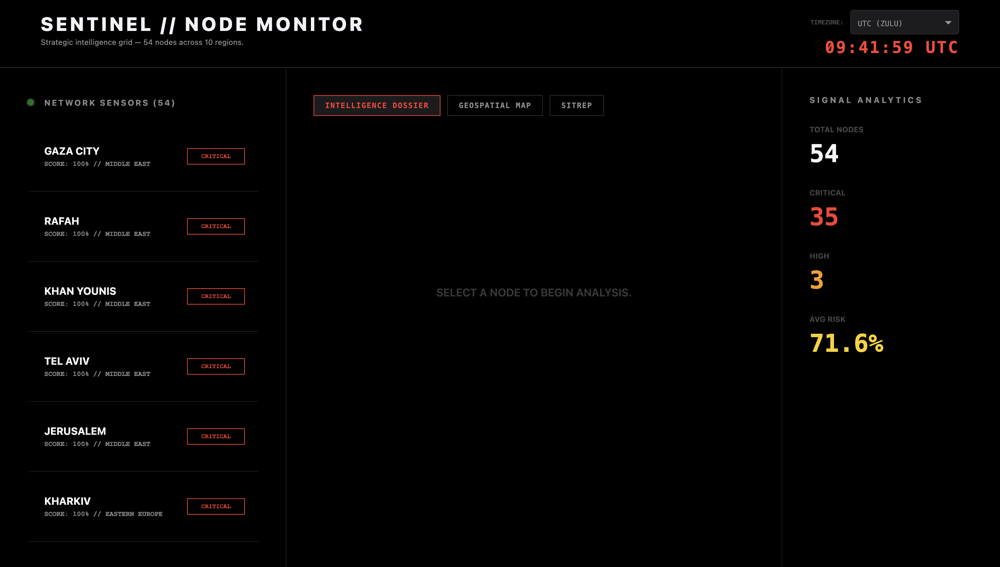
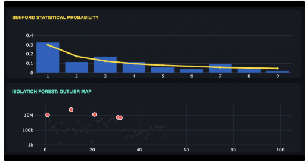
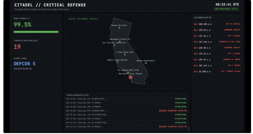

I am an incoming Master of Science in Computer Science student at Georgia Tech and a final-year undergraduate at the University of Auckland. My research interests include Artificial Intelligence, Forensic Data Analysis, and Critical Infrastructure Security.

Kenneth Thakur
Open Source Intelligence (OSINT) · 2026
A real-time dashboard monitoring global conflict signals. Utilizes a resilient RSS aggregation pipeline to scrub high-velocity news feeds into formal tactical SITREPs.

Kenneth Thakur
Forensic Data Science · 2026
An automated auditing engine designed to detect financial fraud and waste in public records. Applies Benford's Law and machine learning outlier detection.

Kenneth Thakur
Cybersecurity & Digital Defense · 2026
An automated vulnerability assessment engine for industrial networks. Utilizes simulated Shodan and NIST NVD threat data to prioritize risk remediation.